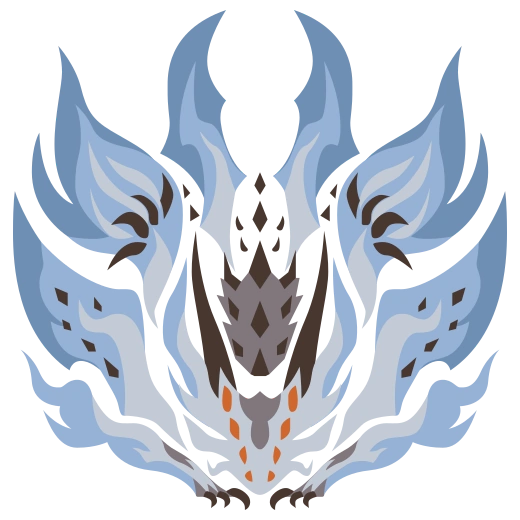
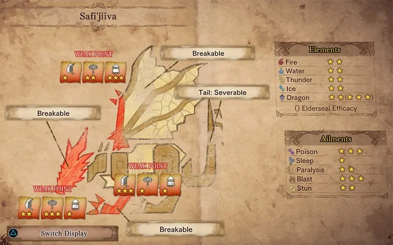

·Safi'Jiiva, L'Empereur·
Ayant fait de la Vallée Secrete son nid, le Safi'Jiiva est l'un des monstres indédits du bestiaire de MHW:Iceborne et, surtout, l'un des plus puissants. Cette force de la nature est un Dragon Ancien(monstres les plus puissants dans l'univers) arborant des écailles rouges sang. En absorbant l'energie contenu dans l'ecosystème qui l'entour, il peut générer des flammes qui atteignent les milliers de dégrés, et peut même régénérer des blessures mortelles.
·Rencontre·
Après avoir vaincu, le Zinogre Stygien le chasseur et ses compagnons découvrent dans la Vallée Secrete des morceaux de peau et des signes qu'un monstre y a récemment mué. Ils se rendent compte que cette peau est celle du Xeno'Jiiva, un Dragon Ancien récemment repoussé par le Chasseur.
C'est alors que surgit le Safi'Jiiva. Un combat s'en suit entre les membres de la Guilde et le monstre, se concluant par la retraite des chasseurs.
·Combat·
S'étant reposée et préparée à un combat sans précédent, la guilde, mené par l'étoile de sapphire, lance un assault sur le Safi'Jiiva, car celui-ci représente un trop gros danger pour l'éco-système. Le combat se divise en trois phases.
·Phase Une·
La Phase une se déroule au plus haut niveau de la Vallée. Une fois, le combat engagé, le Safi'Jiiva va doucement devenir de plus en plus aggressif, utilisant principalement des attaques physiques(il utilise parfois tout de même des attques de feu, notamment en faisant exploser certaines parties de l'arène), tout régénérant ses blessures en aspirant l'enregie environnante. Lors de cette phase il est possible de faire tomber des rocher pour étourdir le mastodonte.
Lorsqu'il a epuisé toute l'énergie à se niveau, le safi s'envole et plonge plus bas dans la vallée, pour atteindre le niveau intermédiaire.

·Phase Deux·
C'est la où les ennuis commencent. Le Safi, completement révéillé, utilise maintenant principalement son feu en synergie avec une grande, rendant difficile de l'atteindre sans se bruler. Mais par dessus tout...le monstre utilise maintenant son attaque la plus puissante, Le Sapphire de L'empereur(voir illustration a gauche):
Le Dragon s'envole pour concentrer sa puissance dans une sphere incandescante; lorsqu'il la lache se produit une explosion titanesque a laquelle seul lui-même peut survivre.
les chasseurs parviennent a survivre a cette attaque en se cachant derrière des pilliers de pière recouverts de la peau que le safi a perdu en muant, peau qui résiste à l'attaque.
·Phase Trois·
Poussé dans ses derniers retranchement le mastodonte se repli à l'étage le plus profond de la vallée, là où les niveaux d'énergie sont les plus haut. En absorbant cette énergie des motifs semblables à des constellations apparaissent sur les ailes du Safi'Jiiva. Il n'y a pas de retour en arrière possible: la phase finale commence. Le theme muscial change, et devient de plus en plus erratique. Pour repousser ses adversaires, le Safi enchaine les Sapphires de l'empereur, ne voulant laisser aucune chance aux chasseurs de survivre. Malgré tout ces obstacles, les chasseurs parviennent finalement à assener le coup de grace au dragon.
·Trailer·
·Autres Informations:·
 |
 |
 |
| Armure Safi Alpha> | Armure Safi Beta | Tableau Forces/Faiblesses |